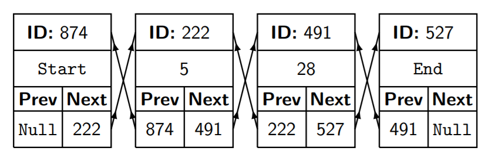
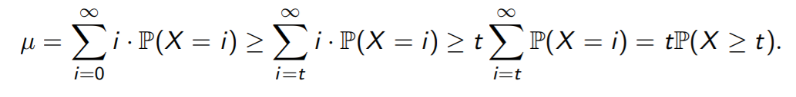

Data Structure Hashing I
FILO — Stacks - First In, Last Out
A stack supports three operations:
create(): Creates a new stack in O(1) time.
push(x): Adds x to the stack in O(1) time.
pop(): Removes the most recently-added piece of data from the stack and returns it in O(1) time.
Used in recursion
FIFO — Queues - First In, First Out
A queue supports three operations:
create(): Creates a new queue in O(1) time.
add(x): Adds x to the queue in O(1) time.
serve(): Removes the least recently-added piece of data from the queue and returns it in O(1) time.
Used in printing
(Double-ended) Linked Lists
A linked list supports four operations:
create(): Creates a new list and returns two node IDs in O(1) time.
insert(x,i): Inserts x after the node with ID i in O(1) time.
delete(i): Deletes the node with ID i in O(1) time.
lookup(i): Return the node with ID i in O(1) time.

Usually“IDs” are pointers to memory cells
Arrays
An array supports three operations. Normally the syntax for these would be built into the language, but here they are explicitly:
create(n): Creates a new n-slot array in O(1) time.
update(x, i): Stores x in the i th slot in O(1) time, overwriting its previous value.
lookup(i): Returns the value stored in the i th slot in O(1) time.
Arrays are usually implemented by allocating a continuous block of memory, storing a pointer to the start, and adding i · (cell size) to get the address of the ith slot. (This is why arrays are often indexed from zero.)
Hash tables (a.k.a. dictionaries)
They store key-value pairs rather than just values, and support four operations:
create(): Creates a new hash table in O(1) time.
insert(k,v): Inserts (k, v) into the table in O(1) time on average.
lookup(k): If (k, v) is in the table, returns v; otherwise returns Null. Takes O(1) time on average.
delete(k): Deletes the pair (k, v) from the table in O(1) time.
Note for each key k, we can only store one value v in the table.
We can also leave v unspecified, and use H to store a set of keys.
| Task | Length-l list | Size-s array | Hash tables |
|---|---|---|---|
| Search for an element | Θ(L) time | Θ(S) time | Θ(1) time |
| Sequence of n insertions and/or removals | Θ(Ln) time | Θ(Sn) time | Θ(1) time |
| Iterate over all elements in order | Θ(L) time | Θ(S) time | No order! |
| Find an element by position Θ | Θ(L) time | Θ(1) time | No order! |
Arrays: Good for storing ordered data with random access/update.
Lists: Good for storing ordered data you’re iterating over a lot, maybe inserting/deleting/updating elements as you go.
Hash tables: Good for storing unordered data, maybe with associated keys, with fast lookup/membership checking.
How do hash tables work?
Let U (for “universe”) be the set of all possible keys.
One option: Store the table in an array indexed by U. Works well if U is small, but… U could be the set of all first names, or all phone numbers, or sets of vertices in a graph. We can’t afford Θ(|U|) space or time.
Instead: Use a smaller array, of size n << |U|, and use a hash function h to map elements of U to {0, . . . , n − 1}.
Let’s take n = 5, U to be the set of English strings, and assume we’re given a hash function h. A first attempt might be:
create(n): Allocates a size-n array A.
insert(k,v): Updates A[h(k)] to v.
lookup(k): Returns A[h(k)].
delete(v): Updates A[h(k)] to Null.
Serious problem: What happens when we assign two keys k and l to the same slot, i.e. h(k) = h(l)?
When (k, v) is in the table, and we try to insert (l,w) with h(l) = h(k), we call this a collision.
Key idea: Instead of an array, use an array of linked lists. (Chaining.)
Downside: If our lists have length l, now lookup and deletion take Θ(l) time rather than O(1) time.
So now collisions don’t break the table completely, but they do make our lists longer, degrading performance. How can we minimise them?
Problem 1: Often |U| >> n, so h has to map many keys to the same slot.
Solution: Choose h cleverly and randomly — see next lecture.
Problem 2: What happens when our hash table has n entries?
Solution: Resize the hash table as we go.
Dynamic resizing
Idea: Track the number of keys stored. (Adds only O(1) overhead.)
On insertion, if there are at least n/2 values in our table H:
- Call create(2n) to make a new table H’ which is twice as big;
- For each pair (k, v) in H, call H’.insert(k, v);
- Use H’ as our new table, setting H ← H’.
If we choose h well, this takes Θ(n) time on average.
But… now insertion takes Θ(n) time in the worst case. That’s bad, right?
Our goal for a hash table is for insertion to take O(1) time on average.
Data Structure Hashing II
Markov’s inequality
Markov’s inequality: Let X ≥ 0 be a random variable with mean µ. Then for all t ≥ 0, P(X ≥ t) ≤ µ/t.
Proof (for discrete variables): By definition, we have

The result follows on dividing by t.
Corollary: If an algorithm has expected running time T, then the probability it runs for more than kT time is at most T/kT = 1/k.
(So e.g. there’s a 95% chance it finishes within time 20T.)
Suppose we have an algorithm with expected running time T on any input.
The trick: If it runs for time 2T or longer, we halt execution and restart the algorithm with the same input. We keep doing this until it works.
Lemma: For all integers k ≥ 1, the probability that this new algorithm
runs for more than 2kT time is at most 2^−k^.
(So e.g. there’s a 1 − 2^−10^ ∼ 99.9% chance it finishes in time 20T.)
Proof: Markov’s inequality implies that each time we run the algorithm, it
fails to halt with probability at most T/2T = 1/2. So we have
P(Running time ≥ 2kT) = P(k consecutive failures)= (1/2)^k^.
Consider a sequence of t legal operations, starting with create().
Theorem: For a suitable choice of h, the expected running time of the whole sequence is O(t).
Last time: We (deterministically) spend O(t) time resizing. So all that’s left is time spent looking through lists, choosing h, and computing h.
 支付宝打赏
支付宝打赏
 微信打赏
微信打赏
保存图片 扫一扫 好人平安